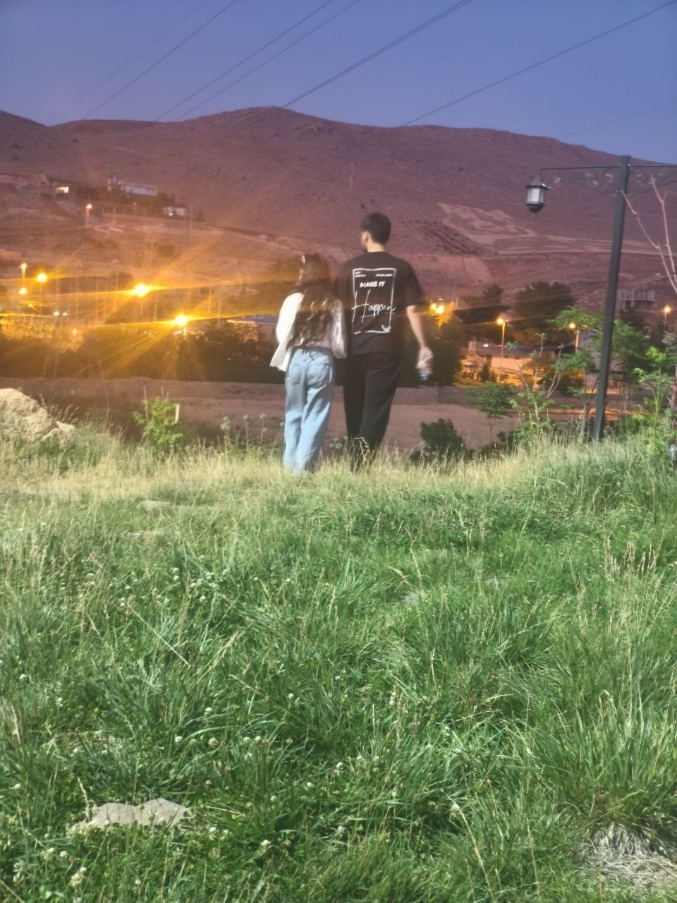
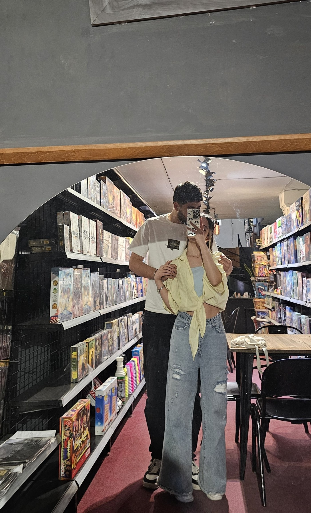
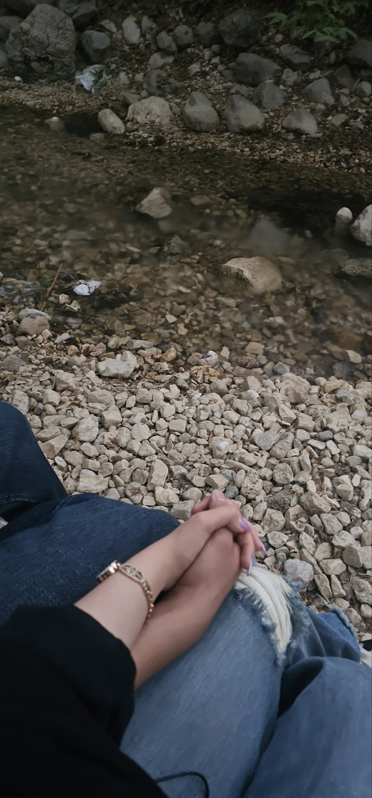
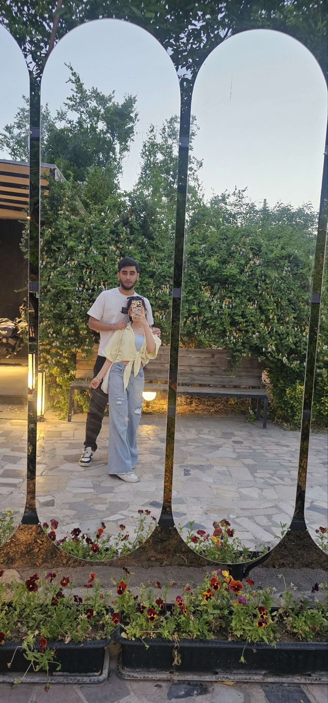
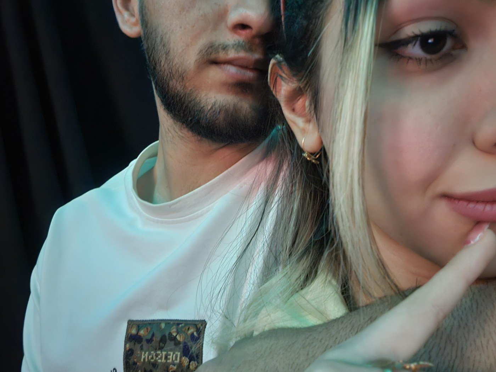
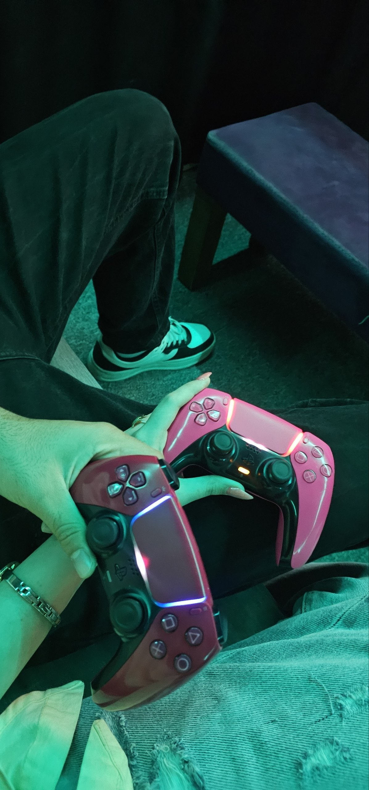
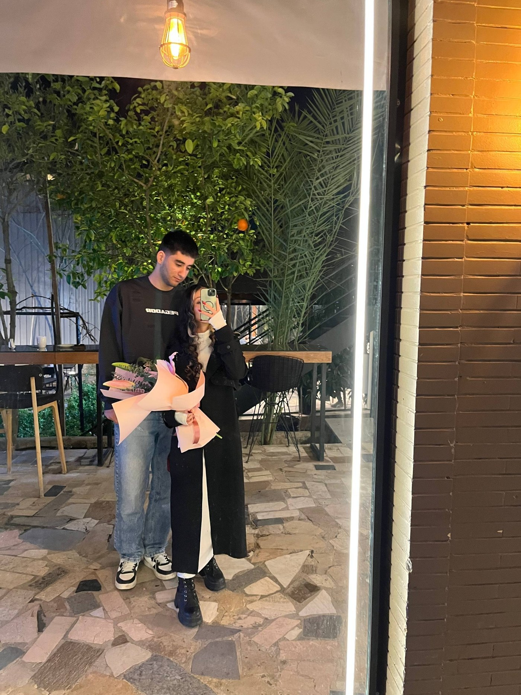
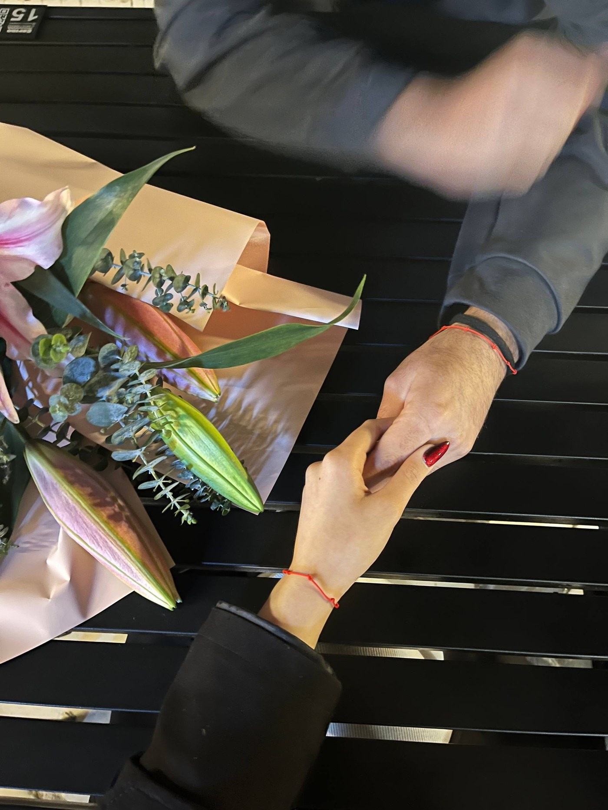

شروع
روزی که «ما» شکل گرفت.
یک گوشه کوچک از دنیای ما
بعضی آدمها وارد زندگی نمیشوند؛
آرامآرام تبدیل میشوند به بخشی از خودِ زندگی.
۲۱ برای من دیگر فقط یک عدد نیست. شروع یک داستان است؛ داستانی که پر شده از حرفهای طولانی، خندهها، دلخوریها، آشتیها و لحظههایی که شاید برای بقیه معمولی باشند، اما برای ما معنی دیگری دارند.
این سایت هم قرار نیست همهچیز را توضیح بدهد. بعضی چیزها بهتر است فقط بین خودمان بمانند.
روزی که «ما» شکل گرفت.
حرفهای طولانی و خندههایی که کمکم شدند بخشی از روزمره.
یک فصل دیگر از داستانی که هنوز تمام نشده.
این قسمت را خودمان هنوز ننوشتهایم.
روی هر عکس بزن؛ بعضی قابها حرف بیشتری برای گفتن دارند.








بعضیشان را چند بار لمس کن...
اگر از من بپرسی چرا تو، شاید جوابم یک دلیل نباشد.
شاید موهات، چشمهات، خندهات، مهربونیات، آن کوچولوی دوستداشتنی بودنت و حتی لجبازیهایت باشند. شاید هم همه اینها فقط اسمهای مختلف یک حس باشند.
اما بین تمام آدمها، تو شدی کسی که بعضی چیزهای ساده را برای من خاص کرد؛ یک عدد، یک آهنگ، یک دریا، یک خنده و یک اسم.
و اگر قرار بود دوباره از اول شروع کنم، باز هم دلم میخواست داستانم از همان ۲۱ شروع شود.
عباس
۲۱ · ∞
ترجیح میدهم فعلاً ننویسیمش.
ادامه دارد.برای ورود، ترکیب مخصوص خودمان را وارد کن.
سه بازی کوچک. سه راه برای رسیدن به یک پیام مخفی.
سؤال آماده است...
پنج شکوفه را قبل از تمام شدن زمان پیدا کن.
کارتهای همشکل را پیدا کن.
حالا یک چیز هست که فقط خودمان میدانیم...
اگر یک روز همهچیز فراموش شود، امیدوارم این یکی بماند:
تو همان آدمی هستی که یک عدد معمولی را برای من تبدیل به یک دنیا کردی. شکوفه سفید من 🤍